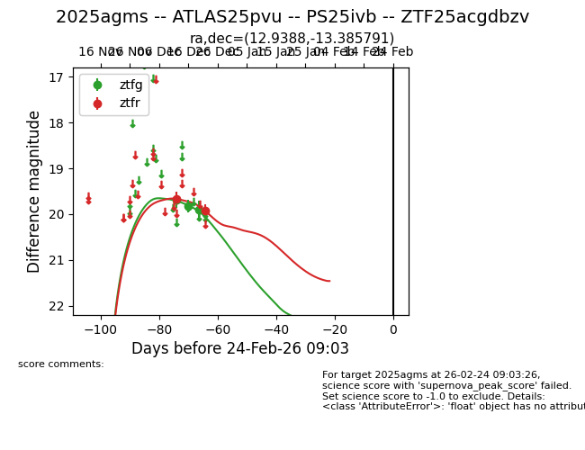
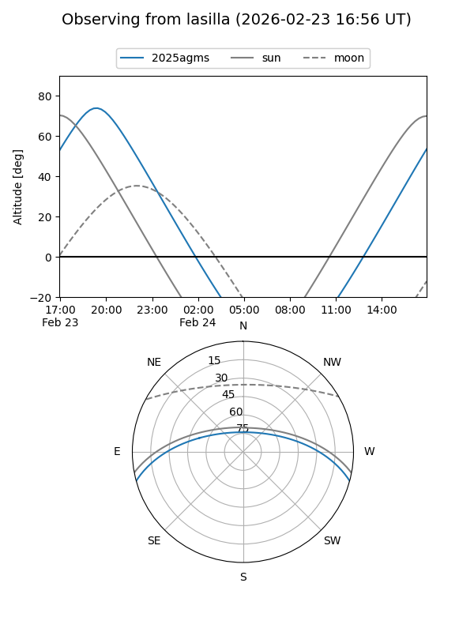
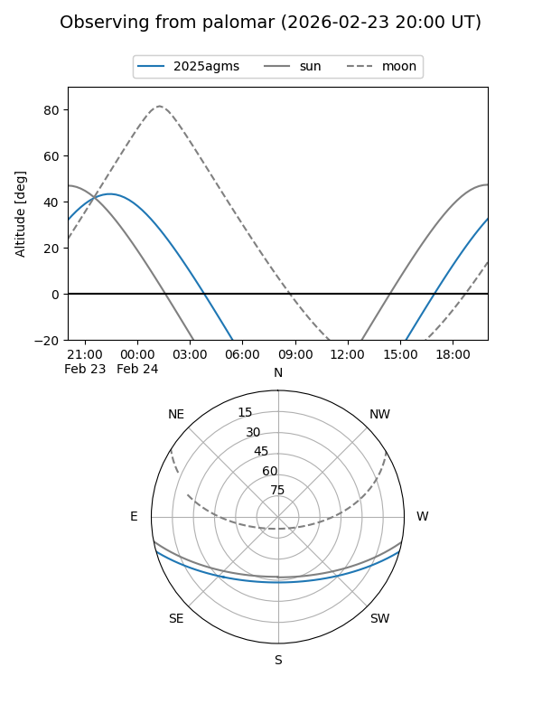
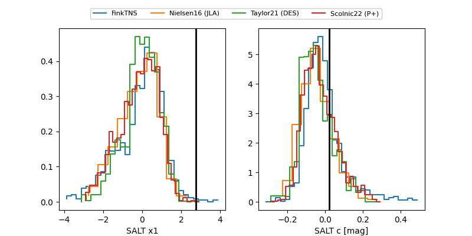

2025agms
Target 2025agms at 2025-12-20 03:04
Aliases and brokers:
FINK: fink-portal.org/ZTF25acgdbzv
Lasair: lasair-ztf.lsst.ac.uk/objects/ZTF25acgdbzv
ALeRCE: alerce.online/object/ZTF25acgdbzv
TNS: wis-tns.org/object/2025agms
YSE: ziggy.ucolick.org/yse/transient_detail/2025agms
alt names
ZTF25acgdbzv (ztf,fink_ztf)
2025agms (tns,yse)
Coordinates:
equatorial (ra, dec) = 12.9388,-13.38579
equatorial (HMS+DMS) = 00:51:45.32,-13:23:08.85
galactic (l, b) = (123.2569,-76.25734)
Flags:
Photometry:
last ztfg=19.91, ztfr=19.66
3 ztfg, 1 ztfr detections
Lightcurve

Visibility


Additional plots
